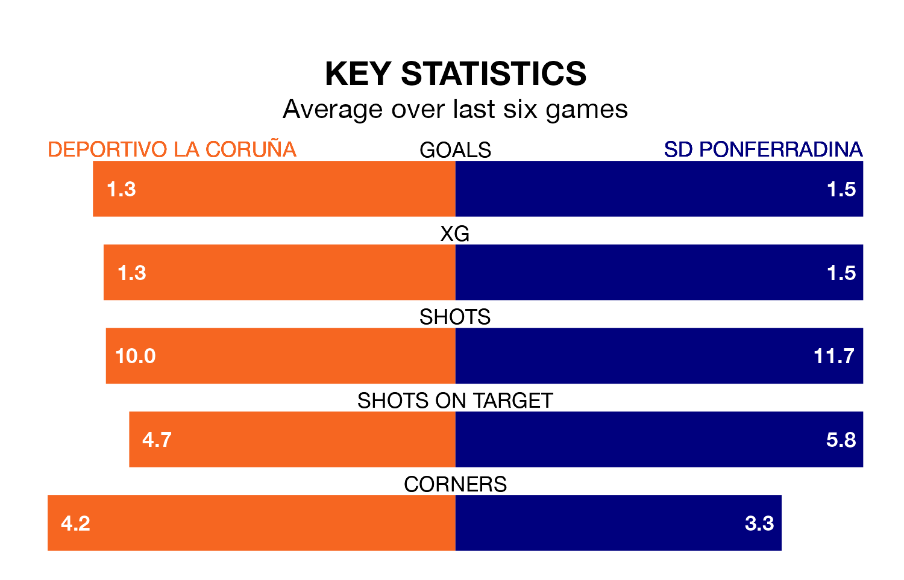

Deportivo La Coruña are heavy favourites to keep all three points at home in Sunday's late kick-off against SD Ponferradina.
Deportivo La Coruña, who sit sixth in Primera Division RFEF Group 1 with 19 games played, are priced at 1.6 to seal victory at the Estadio Abanca-Riazor.
Despite sitting five places and 10 points ahead of them in the table, Ponferradina are 5.4 to win with *Betting Company*, while the draw is at 3.5.
With 23 goals in 19 games so far this season, Ponferradina are scoring more than average in the league with 1.2 goals per game. And they are conceding fewer than average, letting in 11 goals at a rate of 0.6 per game.
Deportivo La Coruña are also above average scorers, with 1.1 goals per game, compared to a league average of 1.0. They have conceded 0.8 goals per game.
The home side are in reasonable form in Primera Division RFEF Group 1, with three wins and two draws from their last six games.
With four wins and a draw over that period, the visitors' form is slightly better – they have taken 13 points from 18, compared to Deportivo La Coruña's 11.
In the last five years, Deportivo La Coruña and Ponferradina have played each other on four occasions. Deportivo La Coruña won two of them, Ponferradina one, and they drew once.
On average, Deportivo La Coruña scored 2.5 goals and Ponferradina 1.2 in those matches.
Their last meeting was on October 15, when they played out a 1-1 draw.
Deportivo La Coruña's last match was on January 14, a 1-0 loss against Cultural y Deportiva Leonesa.
Ponferradina beat SD Logroñés 3-0 last time out, also on January 14, with Ernesto Gómez Muñoz and Thomas Carrique on the scoresheet.
Updated: 10:02 (UTC), 19/01/24